Префектура Канагава · Ёкосука · сакэ
«Какэда сётэн» в Ёкосуке: музей выдержанного сакэ и девять бутылок от хозяина
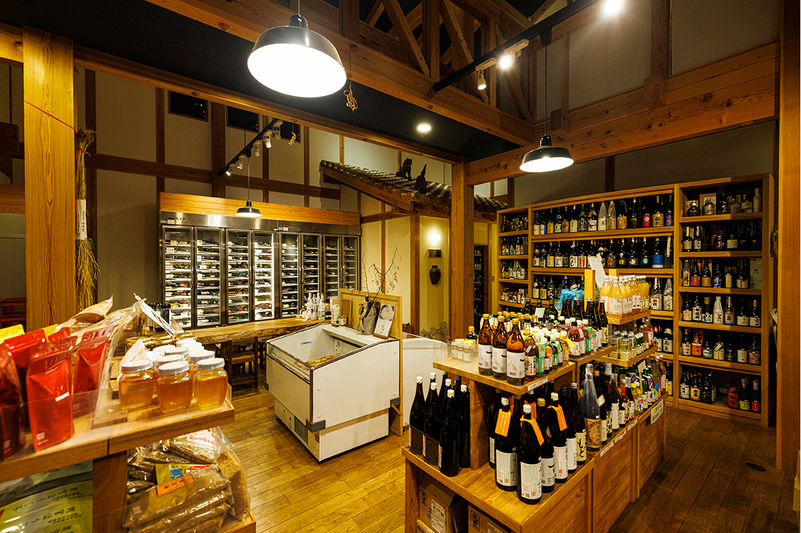
Винный магазин «Какэда сётэн» в Ёкосуке берёт в продажу только то, что сделали знакомые ему мастера. Главная его гордость это выдержанное сакэ и авамори, и глава магазина назвал девять бутылок, которые стоит знать.
Магазин
Лавка, которая передаёт душу мастера
«Какэда сётэн» открылся в 1934 году как обычный винный магазин в своём квартале. Второй хозяин превратил его в магазин местного сакэ: с 1970-х годов он объездил сакэварни по всей стране и начал продавать их сакэ задолго до того, как на местные марки пришла мода. Девиз магазина: «лавка, которая передаёт душу того, кто делает».
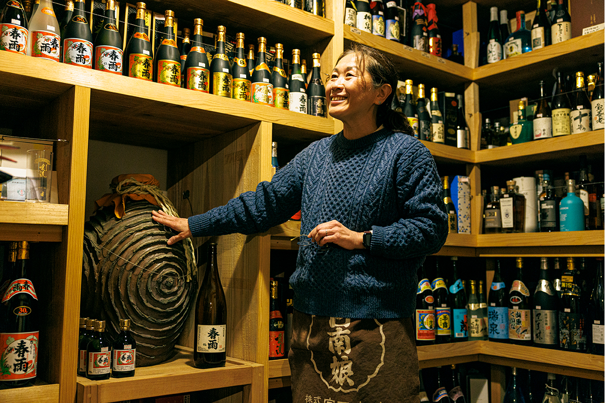
В тёплом деревянном зале стоят сакэ, сётю и авамори, окинавская рисовая водка, примерно от 160 производителей. Каждую марку здесь взяли в продажу только после того, как узнали мастера в лицо, поняли, как он работает, и выстроили с ним доверие. Глава магазина в третьем поколении продолжает этот подход. Есть у магазина и собственные марки, которые для него делают известные сакэварни.
Но больше всего здесь удивляет выбор выдержанного сакэ. В Японии второго такого не найти.
«Интересно смотреть, как меняется вкус. Но главное другое: в наше занятое время сидеть и пить выдержанное сакэ, которое шло по жизни вместе с тобой. Это делает душу богаче»
глава магазина
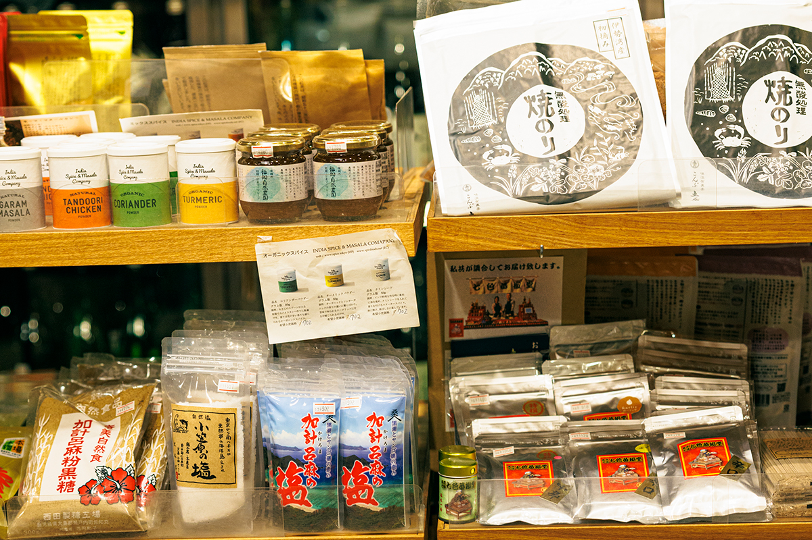
Зима
Пять бутылок для холодного сезона
Главная зимняя рекомендация это «Харусамэ» крепостью 44 градуса без фильтрации, урожая 2006 года. Авамори от винокурни «Миядзато сюдзосё» из Нахи когда-то подносили императорскому двору. Его называют «призрачным авамори»: в продажу уходит всего 1000 литров в год. Эта бутылка выдерживалась 17 лет. «С выдержкой вкус стал мягче, в нём появилась нежная сладость», говорит глава магазина. Бутылка 1,8 л стоила 13 200 иен в 2024 году.
«Данрю» одним из первых стал выдерживать авамори в бочках: выдержанный авамори проводит в дубовых бочках больше трёх лет, и эта марка брала золото на зарубежных конкурсах. «Яркий ванильный аромат. С таким напитком хочется собраться всем вместе, у него весёлый характер. Попробуйте его с содовой». 720 мл стоили 3190 иен в 2024 году.
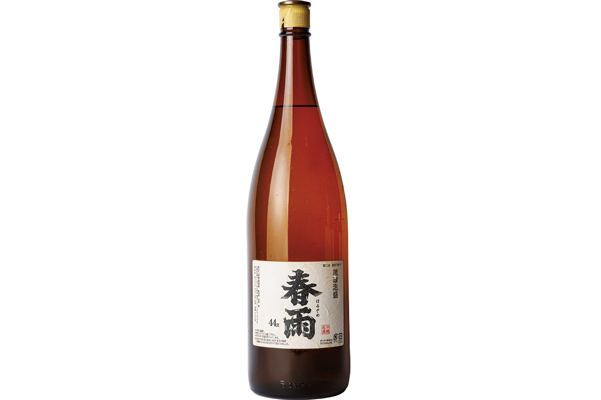
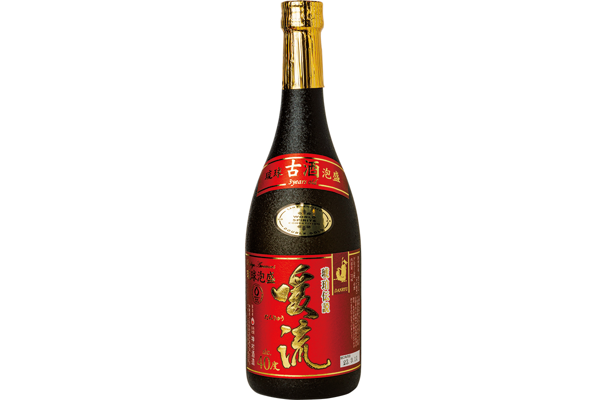
«Комагура TAHITO» урожая 2019 года делает сакэварня «Мори-но кура», которая работает только с рисом из префектуры Фукуока. Это сакэ из риса ямада-нисики, выращенного без пестицидов, сделано методом кимото. «Его вкус раскрывается в подогретом виде. Открытая бутылка не портится, поэтому пейте понемногу и следите, как смягчается кислотность и выходит умами риса». 1,8 л стоили 4180 иен в 2024 году.
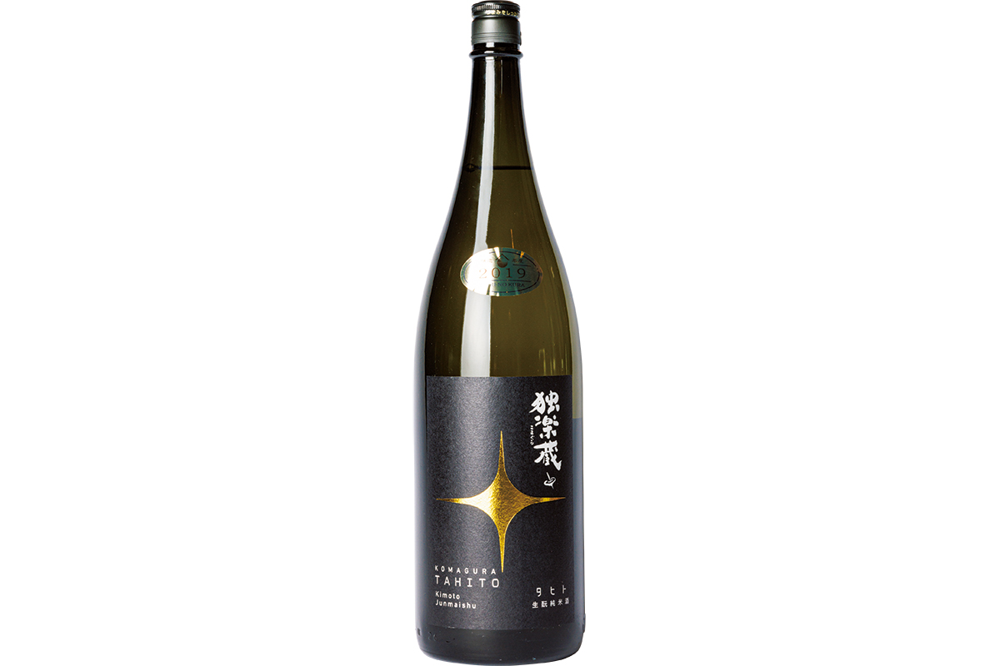
«Хинамусумэ» это сётю из батата 1993 года, который выдерживали в глиняных сосудах по старинному окинавскому способу доливки, как авамори. В 2023 году в продажу ушло всего 157 бутылок. «Сётю к японской кухне: круглый, мягкий, а вкус такой чистый, что от одного глотка отпускает». 1,8 л стоили 6341 иену в 2024 году.
«Бундзо-сан но умэсю» урожая 2009 года сделан на основе сётю «Бундзо»: его делают только из риса на подземной воде области Кума в префектуре Кумамото. «Удивительно насыщенный. С выдержкой вкус стал ещё глубже». 720 мл стоили 2090 иен в 2024 году.
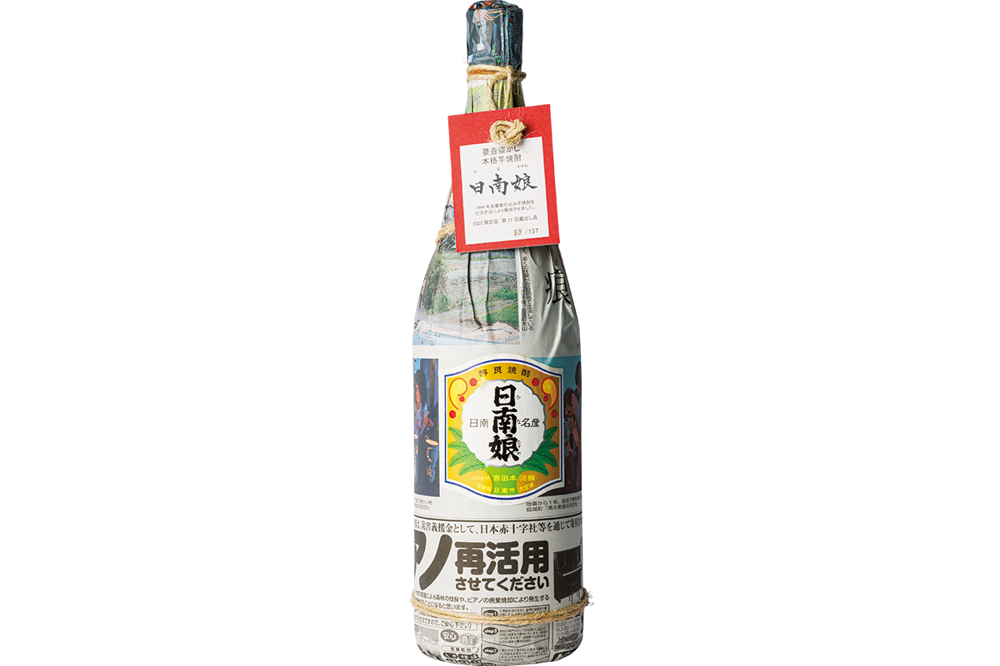
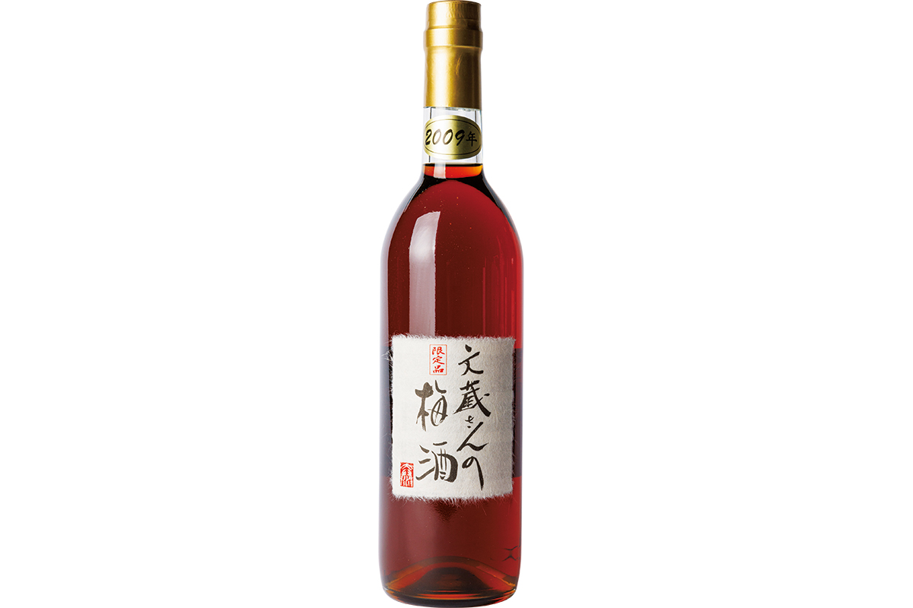
Каждый день
Сакэ к домашнему столу
«Ракка рюсуй Хотару» урожая 2014 года это собственная марка «Какэда сётэн». Сакэ варят в префектуре Окаяма на воде, которая течёт под рекой Биттюгава, из местного риса асахи. Рис намеренно шлифуют мало, оставляя 60 % зерна. Сакэ дзюнмай без фильтрации, непастеризованное и неразбавленное, крепостью 19 градусов. «Крепкое умами и приятная кислотность от дрожжей № 7». 1,8 л стоили 3132 иены в 2024 году.
Сакэварня «Окура хонкэ» на время прекращала работу. Когда она снова открылась, в её ёмкости нашлось сакэ ямахай хондзёдзо, сваренное в 2003 году: так появился «Кинко». «За 20 лет ушла резкость, которая бывает у сакэ с добавленным спиртом. Оно сладкое и вкусное, и не надоедает, даже если пить каждый день». 1,8 л стоили 2860 иен в 2024 году.
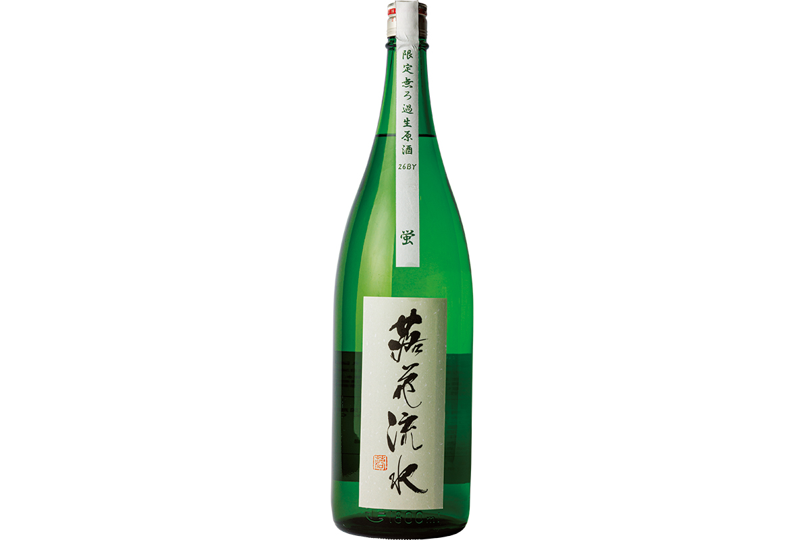
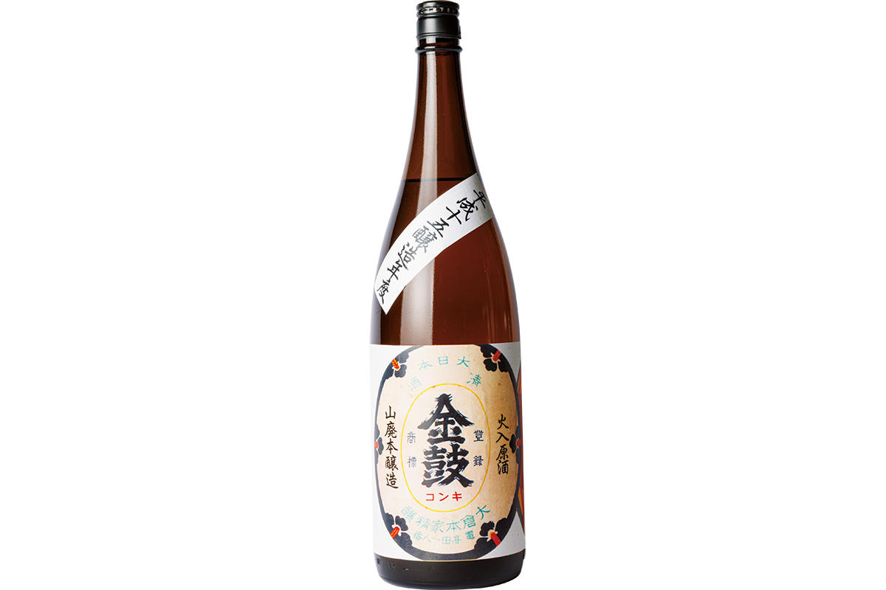
Подарок
Две бутылки для близкого человека
«Мандзэн Рюо» на жёлтом кодзи урожая 2010 года делают в горах Кирисима в префектуре Кагосима старым способом: кодзи вручную, брожение в глиняных сосудах, перегонка в деревянном кубе. «Мягкая сладость жёлтого кодзи с выдержкой стала сложнее. Эта бутылка показывает, на что способен сётю из батата». 720 мл стоили 7480 иен в 2024 году.
«Кёкуко» кидзёсю «Хяку» урожая 2023 года сделан из риса с низким содержанием белка, а часть воды при брожении заменили сакэ. «Густое, сладкое. Его покупают, чтобы выдержать самому, поэтому советую брать бутылку самого свежего года». 720 мл стоили 2640 иен в 2024 году.
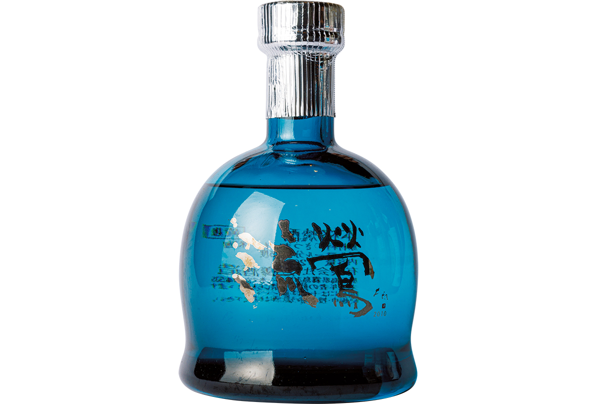
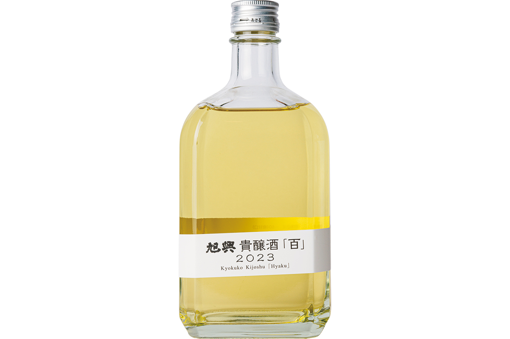
«Какэда сётэн»
- Адрес
- префектура Канагава, Ёкосука, Такатори, 2-5-6
- Телефон
- +81 46-865-2634
- Часы работы
- 10:00–18:00
- Выходные
- нерегулярно
- Сайт
- kakeda.com
Фото: Симпэй Фукадзава.